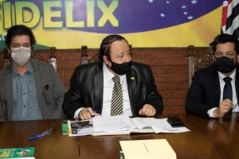
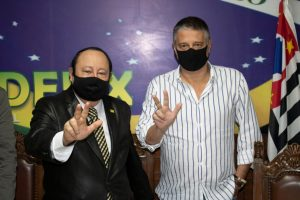
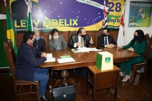

Levy Fidelix é oficialmente candidato a prefeito de São Paulo, pelo PRTB-28. Jairo Glikson ocupa o posto de vice, conforme convenção realizada pela manhã desta segunda-feira, na sede do partido, em Moema (Zona Sul). A “chapa pura” tem 69 pleiteantes a vereador, sendo metade bolsonaristas.
“Vamos para esta disputa com chances reais de vitória. Com as bandeiras Deus, Pátria e Família. Com um plano de governo ainda mais robusto. O projeto que conquistou o País nas últimas eleições vem adotando sugestões nossas, como a desoneração dos impostos para remédios e itens da cesta básica. Em São Paulo, fizeram o Rodoanel, que é ideia nossa. Estou certo de que o eleitor reconhecerá a nossa candidatura com a melhor para a capital paulista“, afirmou o presidente nacional do PRTB e agora prefeiturável Levy Fidelix.
Em sua quarta disputa à prefeitura de São Paulo, Levy Fidelix representa a direita conservadora-raiz, não radical. Aos 68 anos, o político, empresário, jornalista e publicitário, fundador do Partido Renovador Trabalhista Brasileiro, defende propostas para a saúde, educação, mobilidade urbana, segurança, lazer e combate à corrupção.
“Vamos investir no Plano de Assistência à Saúde do Paulistano, com a telemedicina, na ampliação das câmeras de segurança por toda a cidade, na revitalização do Centro com a instalação de um novo Paço Municipal, na construção de um boulevard sobre os Rios Tietê e Pinheiros, o ensino digital e em uma revolução do transporte público”, destaca Levy Fidelix.
A convenção do PRTB seguiu o previsto no estatuto do partido e na resolução do Tribunal Superior Eleitoral, número 23.624, de 13 de agosto de 2020. O comitê executivo do partido homologou a decisão.
Nesta sexta-feira, Levy Fidelix vai para Brasília com 18 candidatos a prefeito pelo PRTB em grandes capitais do País, como Belo Horizonte, Recife e Manaus. Eles estarão em gravações de campanha com o vice-presidente da República, Gal. Hamilton Mourão. A caravana deverá prestigiar na capital federal os eventos de 7 de setembro, dia da Independência do Brasil.